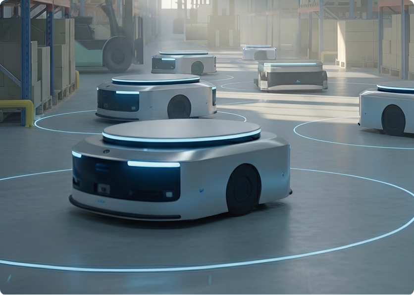
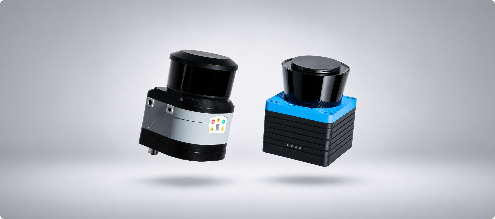
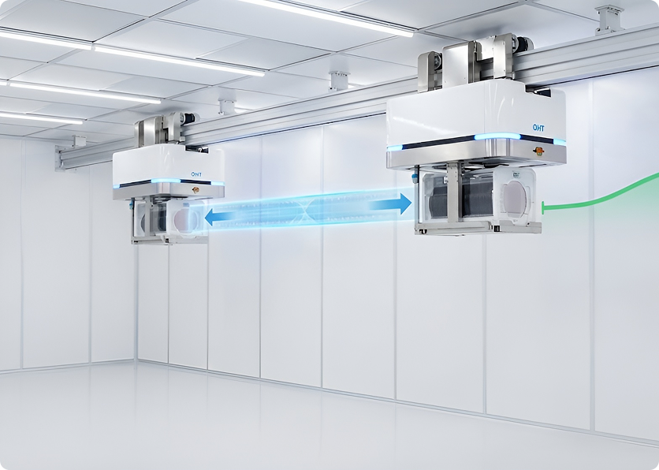
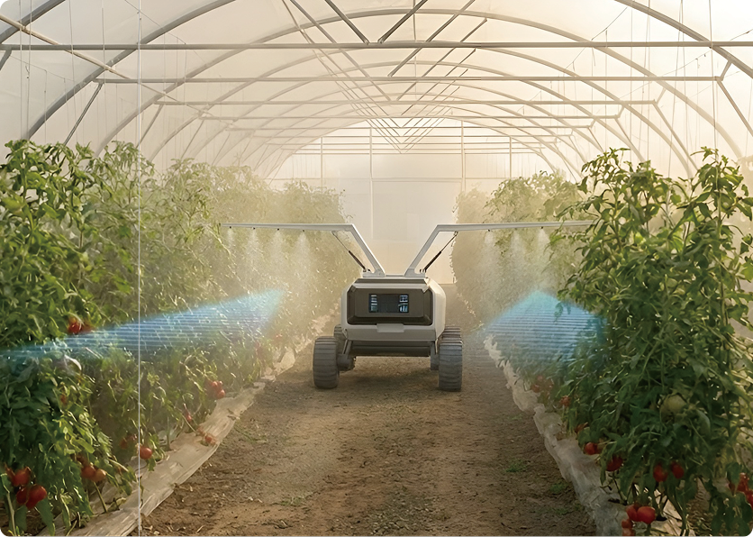
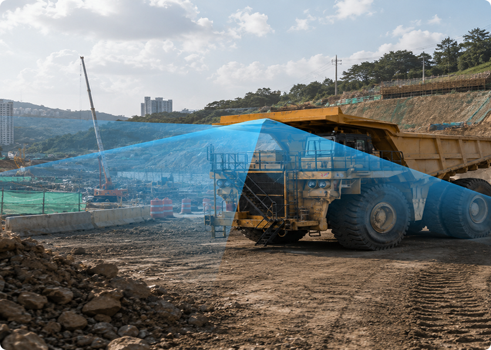
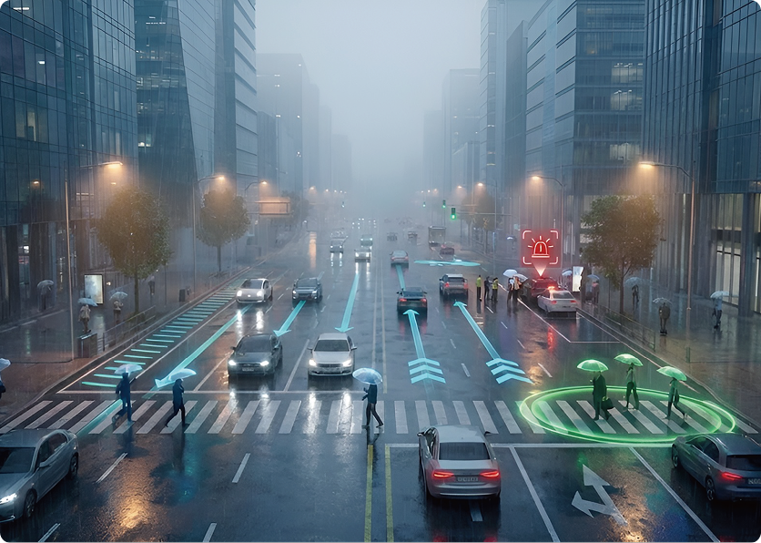
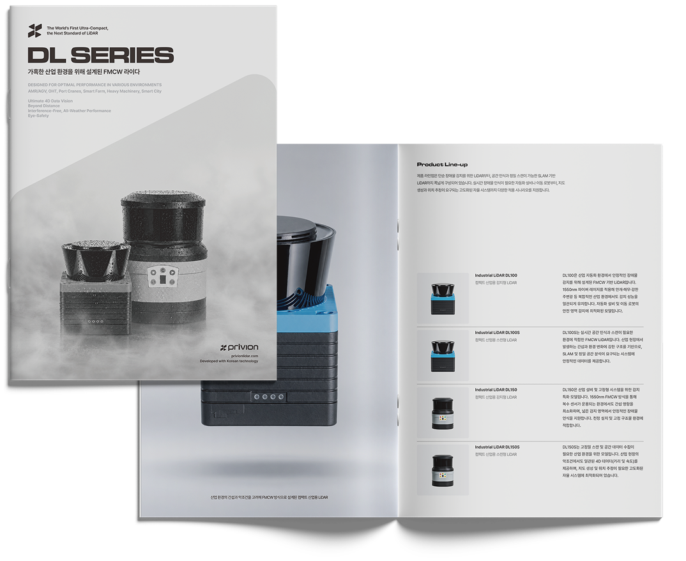

AMR / AGV
AMR/AGV의 안정적인 자율 주행을 지원합니다. 실내 산업 환경과 SLAM 기반 주행 인식 등에서 반복적인 설비 흐름을 정밀하게 판단해 주행성과 안전성을 함께 확보할 수 있도록 적용됩니다.

프리비온의 LiDAR 제품은 다양한 산업장에서 실제 적용될 수 있도록 각 분야의 구조와 특성을 고려해 설계되었습니다.
실내·외부 환경에서 필요한 거리와 속도와 같은 검출 조건을 고도화한 FMCW 감지 기술로 복잡하고 정밀한 자동화 환경까지 대응할 수 있습니다.
정밀한 감지, 복잡한 산업 환경에서 안정적인 센싱 성능이 필요한 AMR 기반 자동화부터 구조물과 이송장비,
식물 환경과 그 외 산업 분야까지 기능 및 사용성이 필요한 구조를 기준으로 구성했습니다.

AMR/AGV의 안정적인 자율 주행을 지원합니다. 실내 산업 환경과 SLAM 기반 주행 인식 등에서 반복적인 설비 흐름을 정밀하게 판단해 주행성과 안전성을 함께 확보할 수 있도록 적용됩니다.

상부 이송 시스템을 위한 LiDAR는 정밀 센싱 환경에서도 높은 감지 성능을 제공합니다. 미세한 위치 오차까지 인식해 OHT 시스템의 안정적인 이송을 지원합니다.

항만 크레인과 대형 구조물의 운영 환경에서, 외부나 다수의 반사체가 적용된 상황에도 주변 구조물과 크레인의 위치 인식이 안정적으로 이뤄질 수 있도록 정밀한 감지 환경을 제공합니다.
스마트팜 환경은 고저차나 반사 조건 등 일부 조건에서도 안정적인 감지 성능을 필요로 합니다. 농기계 및 자동화 장비의 주행 환경에서 안정적인 센싱 데이터를 제공합니다.

광산, 건설 및 토목 현장에서 발생하는 거친 환경과 반복적인 강한 외부 조건에서도 주변 장애물과 작업 반경을 감지하는 데 활용됩니다. 작업자의 안전과 자동화 장비 운용 과정에 감지 성능을 더합니다.

스마트시티 환경에서 사람·차량·인프라를 동시에 인식합니다. 도심의 복합 환경에서도 신호와 주변 반사 요소를 구분해 도시 인프라에 필요한 정밀한 감지 체계를 지원합니다.


프리비온의 기술과 제품 구성을 한눈에 확인할 수 있는 소개 자료입니다.
산업 자동화와 로봇 시스템에 필요한 감지 안정성, 정밀한 센싱 성능, 주요 적용 분야를 함께 살펴볼 수 있으며,
실제 산업 환경을 고려한 기술적 특징과 제품 활용 방향까지 폭넓게 확인할 수 있습니다.